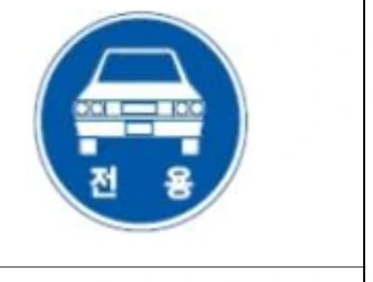

927. 根据《道路交通法》规定，设有下列指示标志的道路的行驶方法正确的是？

- ①特殊机动车不能在该道路上行驶。
- ②货车不能在该道路上行驶。
- ③两轮机动车只有在属于紧急车辆的情况下才能在该道路上行驶。
- ④摩托化自行车只有在属于紧急车辆的情况下才能在该道路上行驶。
查看答案
答案
③ 两轮机动车只有在属于紧急车辆的情况下才能在该道路上行驶。
依据
《道路交通法施行细则》附件 6 汽车道路标志（指示标志第 301 号） 表示该道路为汽车专用道路或专用区域。根据道路交通法规定，汽车以外的车辆（二轮车仅适用于紧急车辆）驾驶者或行人不得通行或穿越高速公路及汽车专用道路。因此，两轮机动车只有属于紧急车辆时，才可在这类道路上通行。
依据文字为学习用机器翻译。